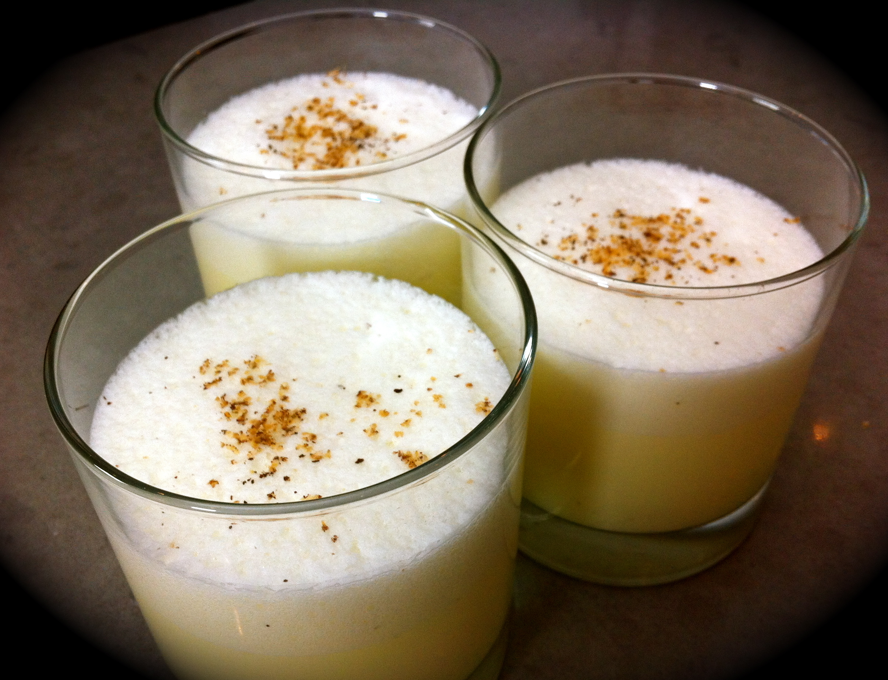

CheeseNog Recipe

Description
This is a recipe passed down to me through 23 iterations of friends-of-friends. This recipe has been sought by the most beloved individuals. As such, reading the below recipe could mean making new friends and enriching yourself with social bonds that will last a lifetime.
Ingredients
- 17 Eggs
- 4 sticks Unsalted Butter
- 2 cups Brown Sugar
- 2 cups Cane Sugar
- 1 cup Red Leaf Sugar
- 1 Tbsp Baking Dust
- 12 Tsp Vodka Vanilla Extraction
- 4 cups Fine Grain Dirt
Directions
- Preheat open flame fire to
hot
using only wood from sapling trees
- Add dry ingredients together in large cauldron
- Mix dry ingredients together with wooden fork using your left hand
- Whisk together 14 of the 17 eggs in large mouth using tongue (use normal whisk and bowl for remaing 3 eggs)
- Melt butter with bare hands until translucent on a flimsy paper plate
- Combine all ingredients in a large bake-safe bowl (including flimsy paper plate)
- Place bowl in open flame for 713 seconds at minimum
- Serve between 10 and 11pm
- Do no enjoy, do not share